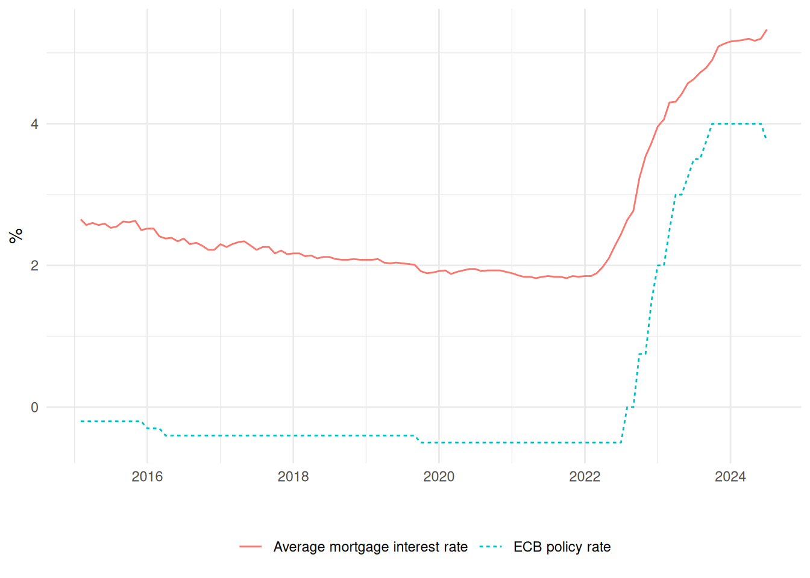

Statistics 2 2024/25 Exam
Introduction
The European Central Bank (ECB) sets its interest rate in order to control inflation in the Eurozone. We call this interest rate the ECB policy rate. Because individual banks in the Eurozone borrow and lend with the ECB based on rate, changes in this rate usually leads to changes in interest rates on individual savings accounts and loans. You have been tasked with investigating how changes in the ECB policy rate is passed through to the monthly average mortgage interest rate in the Netherlands.
You have a dataset of the monthly average mortgage interest rate and the ECB policy rate from February 2015 to July 2024 (n=114 observations). Plotted over time, the data look like:
The dataset contains the following variables:
year: The yearmonth: Month of the year (1=Jan, 2=Feb, …, 12=Dec).rate: The average mortgage interest rate in the Netherlands in that month (rate_t).ecb: The ECB policy rate (ecb_t).rate_chg: The change inratefrom the previous period (rate_t-rate_{t-1}, where rate_{t-1} denotes the value ofratefrom the previous month).ecb_chg: The change inecbfrom the previous period (ecb_t-ecb_{t-1}, where ecb_{t-1} denotes the value ofecbfrom the previous month).ecb_chg_lag: The one-month lag ofecb_chg(ecb_{t-1}-ecb_{t-2}, where ecb_{t-2} denotes the value ofecbfrom two months ago).
You can download the dataset by clicking on the following link: rates.csv.
Note: Although some variables contain lags of other variables, the dataset has been cleaned so that there are no missing observations.
Question 1
What is the sample correlation coefficient between rate and ecb?
Question 2
The sample correlation coefficient between rate_chg and ecb_chg_lag is 0.4452. Choose the option below which best represents the interpretation of this correlation.
- A 1 percentage point decrease in the ECB policy rate in the previous month compared to two months ago increases average mortgage rates by 0.4452 percentage points on average.
- A 1 percentage point increase in the ECB policy rate in the previous month compared to two months ago increases average mortgage rates by 0.4452 percentage points on average.
- There is a positive linear relationship between one-month lagged ECB policy rate changes and contemporaneous changes in the average mortgage rate.
- There is a negative linear relationship between the one-month lagged ECB policy rate changes and contemporaneous changes in the average mortgage rate.
Model 1
Estimate a simple linear regression model that explains rate with ecb.
Your estimated intercept should be 2.43738.
Use this model to answer the following questions.
Question 3
Choose the answer below which best represents the interpretation of the sample regression intercept.
- If the ECB policy rate is 0%, then on average the average mortgage interest rate is 2.44%.
- If the ECB policy rate is 0%, then on average the average mortgage interest rate is 2.44%. However, there are no observations of
ecbat or near zero so this prediction is unreliable. - If the ECB policy rate is 0%, then on average the average mortgage interest rate is 2.44%. However, there are no observations of
rateat or near zero so this prediction is unreliable. - If the ECB policy rate is 0%, then the mortgage interest rate will be 2.44%.
Question 4
Report the sample regression slope.
Question 5
According to the estimated model, an increase in the ECB policy rate of 2 percentage points leads to how much of an increase in the average mortgage interest rate on average?
Question 6
Obtain the residuals e_t from the estimated model of rate on ecb and estimate an auxiliary regression model that explains the residuals using the one-month lag of residuals:
e_t = \gamma_0 + \gamma_1 e_{t-1} + \nu_t Perform a test for the usefulness of this auxiliary model. That is, H_0: \gamma_1=0 and H_1: \gamma_1\neq 0. Use a 5% significance level.
- Under the null hypothesis, the model (choose one option below):
- Does not suffer from serial autocorrelation.
- Suffers from serial autocorrelation.
- Does not suffer from heteroskedasticity.
- Suffers from heteroskedasticity.
- What is the value of the test statistic from your test? \underline{\hspace{20mm}}
- What is the critical value? \underline{\hspace{20mm}}
- What is your conclusion? (Choose one option below:):
- The value of the test statistic is larger than the critical value. Therefore we reject the null hypothesis.
- The value of the test statistic is smaller than the critical value. Therefore we reject the null hypothesis.
- The value of the test statistic is larger than the critical value. Therefore we fail to reject the null hypothesis.
- The value of the test statistic is smaller than the critical value. Therefore we fail to reject the null hypothesis.
Model 2
Based on your analysis of the previous model, you decide it would be better to estimate a model using changes in rate_t and ecb_t instead of levels. Additionally, you want to use the lagged change in the ECB policy rate because banks may take some time to respond to the policy rate.
Estimate a model that explains the change in the average mortgage interest rate (rate_chg) with the one-month lagged change in the ECB policy rate (ecb_chg_lag).
If you estimated the model correctly, your estimated intercept should be 0.014505.
In terms of rate_t and ecb_t, the model can be written as: \mathbb{E}[rate_t-rate_{t-1}|ecb_{t-1}-ecb_{t-2}]=\beta_0+\beta_1(ecb_{t-1}-ecb_{t-2})
Use this model to answer the following questions.
Question 7
Using the model, test the following claim at the 5% level using a p-value approach:
“A 1 percentage point increase in the ECB policy rate between months t-2 and t-1 leads to a more than 0.2 percentage point increase in the average mortgage rate compared to the case where the ECB keeps the policy rate unchanged.”
To help you answer this question, we note the following:
- A 1 percentage point increase in the ECB policy rate between months t-2 and t-1 corresponds to ecb_{t-1}-ecb_{t-2}=1. Then according to the model we have: \mathbb{E}[rate_t-rate_{t-1}|ecb_{t-1}-ecb_{t-2}=1]=\beta_0+\beta_1\times 1=\beta_0+\beta_1
- If the ECB policy rate remains unchanged between months t-2 and t-1, then ecb_{t-1}-ecb_{t-2}=0. Then according to the model we have: \mathbb{E}[rate_t-rate_{t-1}|ecb_{t-1}-ecb_{t-2}=0]=\beta_0+\beta_1\times 0=\beta_0
Answer the questions below.
What is the null hypothesis? \beta_1 </\leq/>/\geq/=/\neq \underline{\hspace{20mm}} (choose one comparison operator and fill in a value in the blank).
What is the alternative hypothesis? \beta_1 </\leq/>/\geq/=/\neq \underline{\hspace{20mm}} (choose one comparison operator and fill in a value in the blank).
Under the null hypothesis, the test statistic T follows a t distribution with how many degrees of freedom? \underline{\hspace{20mm}}
What is the value of the test statistic? \underline{\hspace{20mm}}
What is the associated p-value? \underline{\hspace{20mm}}
What is your conclusion? Choose an option below:
- Reject H0: There is sufficient evidence for the claim.
- Reject H0: There is not sufficient evidence for the claim.
- Don’t reject H0: There is sufficient evidence for the claim.
- Don’t reject H0: There is not sufficient evidence for the claim.
Question 8
If the ECB keeps the policy rate fixed each period, by how much does the model predict the average mortgage rate to increase each period on average (in percentage points)?
Question 9
In August and September 2022, the ECB policy rate was zero. In October 2022 it increased to 0.75% and remained at this rate in November 2022. According to the model, by how much more is the average mortgage rate expected to increase between October and November 2022 compared to the case where the policy rate remained unchanged?
Question 10
Provide a 99% confidence interval for the estimated coefficient on ecb_chg_lag:
- Lower bound: \underline{\hspace{20mm}}
- Upper bound: \underline{\hspace{20mm}}
Question 11
What is the coefficient of determination in your model?
Question 12
What proportion of the variation in rate_chg is left unexplained by the model?
Note: proportions are between 0 and 1.
Question 13
Use the estimated model to predict what the average mortgage interest rate will be in August 2024 based on the observed ECB policy rates that we observe in the data.
Also provide the lower bound and upper bound for a 95% prediction interval for this prediction.
Note: Using the predict() function in R (or obtaining predicted values and individual prediction intervals if using SPSS) with this model will only provide you with a prediction for the change in the average mortgage interest rate. You will need to combine these values with the observed average mortgage interest rate in July 2024 to transform your answer into a prediction for the actual average mortgage interest rate in August 2024. That is, your model will predict rate_t-rate_{t-1}, but you need to provide a prediction and prediction interval for rate_t in your answer.
- Prediction: \underline{\hspace{20mm}}
- Prediction interval lower bound: \underline{\hspace{20mm}}
- Prediction interval upper bound: \underline{\hspace{20mm}}
Model 3
You are now interested in if increases in the ECB policy rate are more quickly reflected in mortgage interest rates compared to policy rate decreases. This phenomenon is called asymmetric price transmission, also known as “rockets and feathers”. When the EBC policy rate increases, mortgage rates rise immediately (like a rocket), whereas if it decreases, mortgage rates fall only gradually (like feathers falling slowly).
To study this phenomenon, create the following two dummy variables from the data:
positive_chg: A dummy variable that equals one ifecb_chg_lag > 0and is zero otherwise (dummy for lagged positive changes).negative_chg: A dummy variable that equals one ifecb_chg_lag < 0and is zero otherwise (dummy for lagged negative changes).
Using these two variables, estimate a model that explains rate_chg with these two dummy variables.
If you estimated the model correctly, your estimated intercept should be 0.01426.
Use this model to answer the following questions.
Question 14
Perform an appropriate hypothesis test to test the usefulness of the model. Use a 5% significance level.
- The null hypothesis is that at least one/all/none (choose one) of \beta_j </\leq/>/\geq/=/\neq \underline{\hspace{20mm}} for j= \underline{\hspace{20mm}} to \underline{\hspace{20mm}} (choose one comparison operator and fill in values in the blank spaces).
- The alternative hypothesis is that at least one/all/none (choose one) of \beta_j </\leq/>/\geq/=/\neq \underline{\hspace{20mm}} for the same j (choose one comparison operator and fill in a value in in the blank space).
- The formula for the test statistic is of the form: \frac{\frac{a - SSE}{k}}{\frac{SSE}{n-k-1}} What is the value of a in the estimated model? \underline{\hspace{20mm}}
- What is the value of the test statistic? \underline{\hspace{20mm}}
- What is the critical value? \underline{\hspace{20mm}}
- What is your conclusion? (choose one option below):
- Reject H_0. The model is useful.
- Reject H_0. The model is useless.
- Don’t reject H_0. The model is useful.
- Don’t reject H_0. The model is useless.
Question 15
Which variables are individually statistically significant at the 5% level?
Question 16
Does your model give evidence that the mortgage interest rate displays the rockets and feather phenomenon?
Yes/No. When the ECB policy rate increases, there is a large positive/small negative and statistically significant/insignificant impact on the average mortgage interest rate. This is the rockets/feathers effect. However, when the ECB policy rate decreases, there is a large positive/small negative and statistically significant/insignificant** impact on the average mortgage interest rate.
Question 17
Why did we not have the problem of strict multicollinearity when we include a dummy for both positive changes and negative changes?
- The problem is there, but R/SPSS ignored it and estimated the model anyway.
- Because there are observations with
ecb_chg_lagequal to zero, we do not have strict multicollinearity. - Because we are estimating the model with
rate_chginstead ofrate, we avoid the problem. - We are able to write negative changes as the negative of positive changes. Therefore one variable can be written as a linear combination of another.
Model 4
Estimate a model with rate_chg as the dependent variable and the following 3 independent variables:
yearpositive_chgnegative_chg
The variables positive_chg and negative_chg here are the same as those you created for model 3.
If you estimated the model correctly, your estimated intercept should equal -22.992197.
Use this model to answer the following question.
Question 18
Test the joint usefulness of variables positive_chg and negative_chg, which are the 2nd and 3rd variables in your model. Use a 5% significance level.
Choose one of the options in italics and fill in the blanks.
- The null hypothesis is that all/at least one/none of \beta_j \rule{1cm}{0.15mm} \rule{1cm}{0.15mm} for j=\rule{1cm}{0.15mm}.
- The alternative hypothesis is that all/at least one/none of \beta_j \rule{1cm}{0.15mm} \rule{1cm}{0.15mm} for the same j.
The test statistic is of the form: \frac{\frac{SSE_r - a}{k-g}}{\frac{a}{n-k-1}}
What is the value of a in the test? \rule{1cm}{0.15mm}
What is the value of the test statistic? \rule{1cm}{0.15mm}
What is the p-value? \rule{1cm}{0.15mm}
Which of the 4 options below is the correct conclusion from the test?
- Reject H0. The variables are useful additions to the model.
- Reject H0. The variables are not useful additions to the model.
- Don’t reject H0. The variables are useful additions to the model.
- Don’t reject H0. The variables are not useful additions to the model.